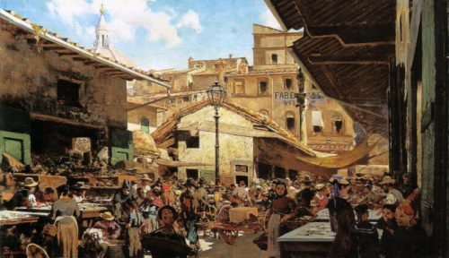
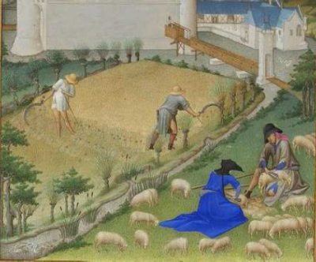

Moneta e crediti nel medievo
Indice |
Iniziano a svilupparsi i primi mercati di scambio
Nell'ultima fase dell'Alto Medioevo, a partire dalla caduta dell'Impero romano d'Occidente (476 d.C.), si sono sviluppati mercati di scambio delle merci in società agrarie e piccoli centri urbani. La moneta metallica e poi quella bancaria si sono affermate come mezzo per l'acquisto e la vendita di diverse merci nel mercato per semplificare le relazioni di valore tra molti beni negoziabili e tra soggetti diversi; inoltre l'uso della moneta si è diffuso per ridurre i costi di transazione. 
Compra-vendite di merci con pagamento monetario concordato
Dalla relazione tra l'attività economica svolta presso le corti feudali e quella dei borghi, si è formata un'economia di mercato basata su compra-vendite di merci con pagamento di un prezzo monetario concordato. L'espansione geografica e merceologica degli scambi commerciali è stata possibile grazie alla diffusione dell'utilizzo della moneta.Il valore monetario di scambio di una merce in un determinato tempo e luogo si determina sulla base delle operazioni di compra-vendita della merce in quelle condizioni; in condizioni di competizione, il valore dipende dalla quantità complessiva di domanda e offerta del bene nel mercato. Le attività produttive e di intermediazione commerciale sono state organizzate in modo da sfruttare le competenze specifiche di diversi individui o gruppi, in modo da ottenere una maggiore efficienza e produttività. Queste nuove modalità hanno permesso ai produttori e ai commercianti di specializzarsi in determinati beni o servizi, riducendo i costi e aumentando la qualità dei loro prodotti. Questo ha anche portato a nuove modalità di pagamento basate sulla reputazione creditizia di terze parti che sottoscrivevano "lettere di cambio" come forma di riconoscimento di un debito monetario.

Lettera di scambio
Il pagamento delle merci avveniva attraverso la consegna di una lettera di cambio o di credito al venditore, che quindi registrava il proprio credito monetario nei libri contabili del mercante-banchiere che aveva emesso la lettera. D'altra parte, il commerciante-acquirente rimaneva obbligato nei confronti del mercante-banchiere a restituire la somma presa in prestito con un interesse proporzionato al tempo del prestito e alla classe sociale del prenditore. L'organizzazione di questo tipo di attività, con l'accettazione di depositi monetari, l'effettuazione di pagamenti per conto dei clienti-depositanti mediante scritturazione nei libri e il prestito di una parte dei depositi ricevuti ad altre parti, ha dato origine all'attività bancaria e alla moneta bancaria, contribuendo in modo significativo all'espansione dell'economia europea grazie alla facilitazione degli scambi commerciali indotta dalla ridotta necessità di trasferimento e trasporto di moneta metallica.
Trasformazione dell'attività economica
Nella società feudale, i proprietari fondiari si appropriavano della maggior quantità di beni (soprattutto agricoli) prodotta dai contadini per il loro uso e consumo. Il lavoro dei contadini non era pagato in moneta, ma in prodotti agricoli. Solo l'eccedenza dei prodotti ottenuti dai contadini veniva venduta in mercati e fiere. Questo ha portato a un'economia locale e rurale, incentrata sulla soddisfazione dei bisogni di sussistenza, senza che la moneta avesse un ruolo significativo nello sviluppo economico. 